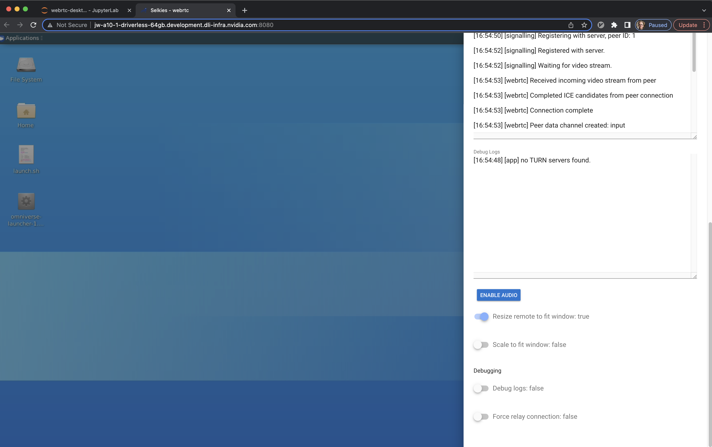
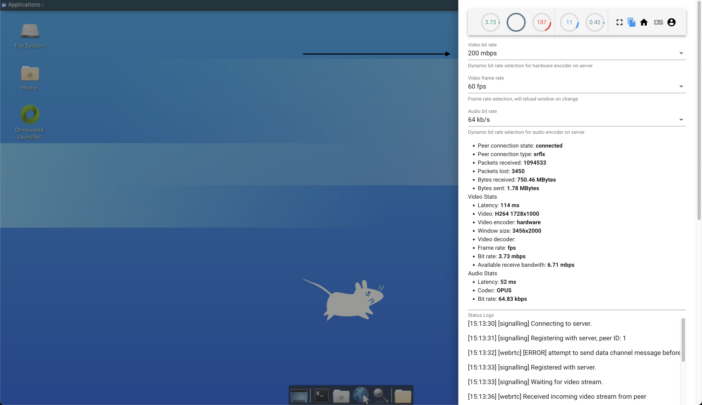
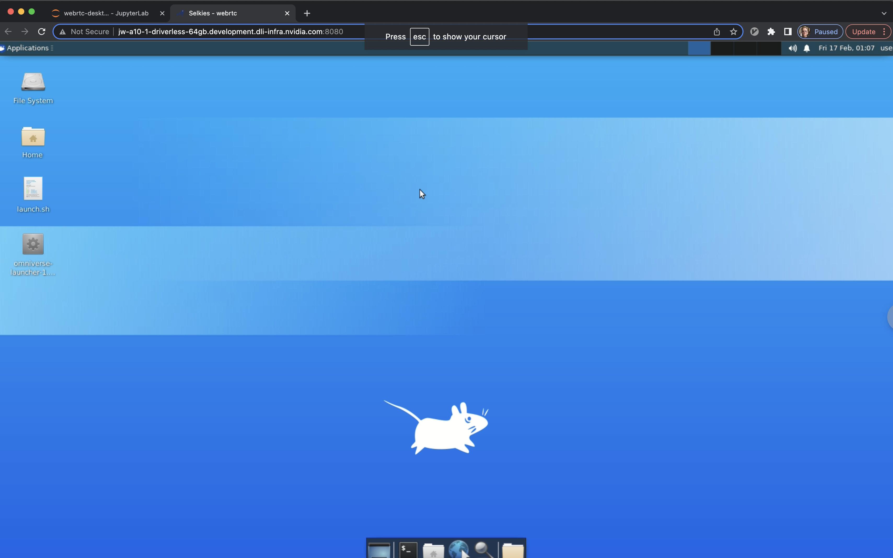

Omniverse Remote Desktop Troubleshooting Guide#
This guide presents solutions to common issues you may face while using the Omniverse remote desktop.
Install the Latest Chrome#
As a first step, if you are having any issues, please download and use the latest version of Chrome.
Common Issues#
This document covers the following issues. Be sure you are using the latest version of Chrome.
The desktop is not responding to my clicks, it appears frozen.
The desktop is the wrong size for my screen.
The desktop is slow to respond or laggy.
I can’t copy/paste.
My ALT or OPTION key is not working.
The desktop is not responding to my clicks, it appears frozen#
Fix: refresh the page. If the remote desktop is not responding to your clicks and/or appears frozen, refresh the browser tab. On occasion you may have to refresh it a second time.
If, after waiting a minute and then refreshing the browser at least 3 times, you find that your desktop is a black screen that will not do anything else, it is likely you will need to reboot the coding environment. Please get an instructor or TA to assist you.
The desktop is the wrong size for my screen#
Fix: set the “Resize remote to fit window” setting to “true”.
Depending on the size of your browser window, the desktop may not fit well into your browser window. It may be the desktop is too small for your browser window and there is akward black padding, or that it is too big and you cannot see some of the desktop, like the application tray at the bottom.
To fix this, click the semi-circle on the right-hand side of the remote desktop to open a setting panel. Scroll down the panel and click on the “Resize remote to fit window” option. This will cause the desktop browser tab to refresh. After it reloads it should fit your screen correctly.

The desktop is slow to respond or laggy#
Fix 1: Reduce the Video Bit Rate. (Be sure to see the other fixes below).
If you open the side settings panel you can select and reduce the “Video bit rate”. Doing so will reduce the quality of the images in the remote desktop environment, but will be less taxing on your network. You can likely reduce this to a setting where the desktop still looks very nice, but with improved responsiveness.

Fix 2: reduce the size of your application’s viewport.
In particular for for Omniverse applications with a lot of graphics intensive work being done, you might find that reducing the size of the viewport where all the rendered objects are presented, greatly improves the overall performance of your remote desktop environment.
Fix 3: “Fix” the cursor.
By default, your mouse cursor can move freely in and out of the remote desktop. We have found that performance can be much improved by “fixing the cursor” inside the remote desktop, which can be accomplished by doing CTRL+SHIFT+LEFT MOUSE CLICK while inside the remote browser. When you do this, you may notice that your cursor changes slightly. You will also see a message indicating that you can press esc to unlock the cursor.
Please note, if you leave the remote desktop environment you will have to “Fix” the cursor again when re-entering it.

I can’t copy/paste#
You should be able to copy/paste in between applications in the remote desktop, but not in and out of the desktop from your computer’s larger environment. However, the key-bindings inside the remote desktop may not be what you expect. When you want to copy/paste, try selecting the “Edit” menu of application you are using and use it to copy/paste, or, observe there what the application says the keyboard shortcut is to perform the copy/paste, and use it.
My ALT or OPTION key is not working#
Fix: use the right ALT or OPTION key.
Unfortunately, you may find that your LEFT ALT or OPTION key does not work as expected. You should be able to use the RIGHT one instead.